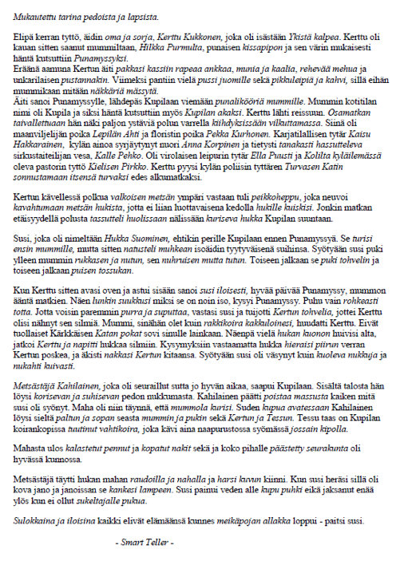
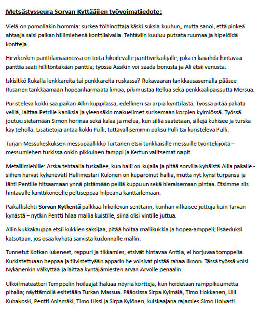
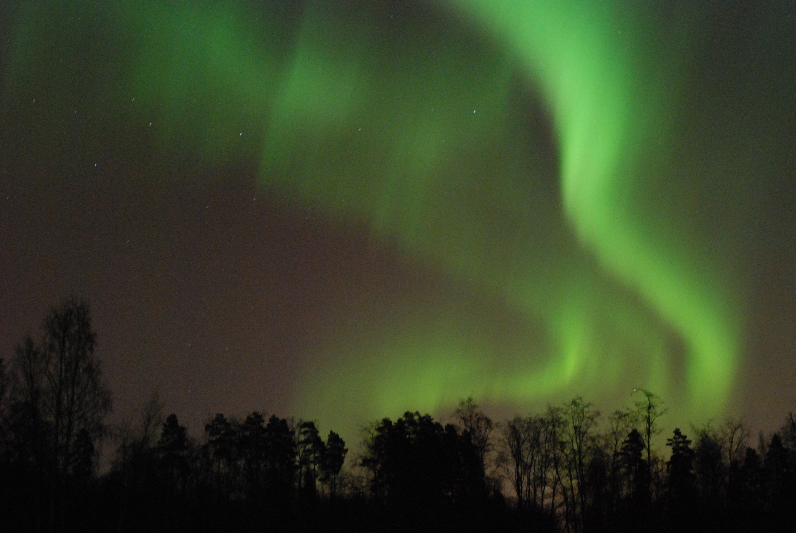

Ajankohtaista
Yleinen syyskokous 27.10. klo 15:00 Riihilahdessa.
Tule tutustumaan toimintaan ja vaikuttamaan kylän asioihin. Yleisten kokousasioiden lisäksi pohditaan yhdessä kyläyhdistyksen tarpeellisuutta.
Pikkujoulut 24.11 klo 15:00 alkaen Riihilahdesa.
Tarjolla joulupuuroa, torttuja, joulukorttien askartelua, mukavaa yhdessäoloa ja joulumieltä.
Joulumyyjäiset 14.12 klo 10-14 Riihilahdesa.
Myynnissä leivonnaisia ja käsitöitä jouluisessa tunnelmassa.
Kuvasatoa vuoden 2013 sanamuunnostapahtumasta voit katsoa täältä.
Alla vuoden 2013 sananmuunnoskilpailun voittajakolmikko ja heidän voittokkaat tekstinsä.
- Ilkka Kortelainen, Villikuhaa ja kala-arvoituksia
- Pertti Toivonen, Mukautettu tarina pedoista ja lapsista
- Lauri Lehtinen, Metsästysseura Sorvan Kyttääjien työvoimatiedote


Sorvan kyläyhdistyksen järjestämä sananmuunnostapahtuma ja ja siihen liittyvä kirjoituskilpailu sai viime vuonna runsaasti huomiota mediassa. Riihilahdessa kävi varovaistenkin arvioiden mukaan yli 500 vierasta. Aiheesta löydät lisää mm. täältä, ja täältä.
Sorvan kylä sai melkoisesti mainetta MTV3:n Putous-ohjelman aikana Usko Eevertti Luttisen edustaessa ansiokkaasti kyläämme. Ainakin Iltasanomat ja Tamperelainen käsittelivät aihetta palstoillaan.
Sorvan kyläyhdistyksen löydät myös Facebookista
Komeat revontulet näkyivät 17.3.2013 Sorvassa ja valaisivat niin hiihtolatua kuin Kylänlahteakin.

